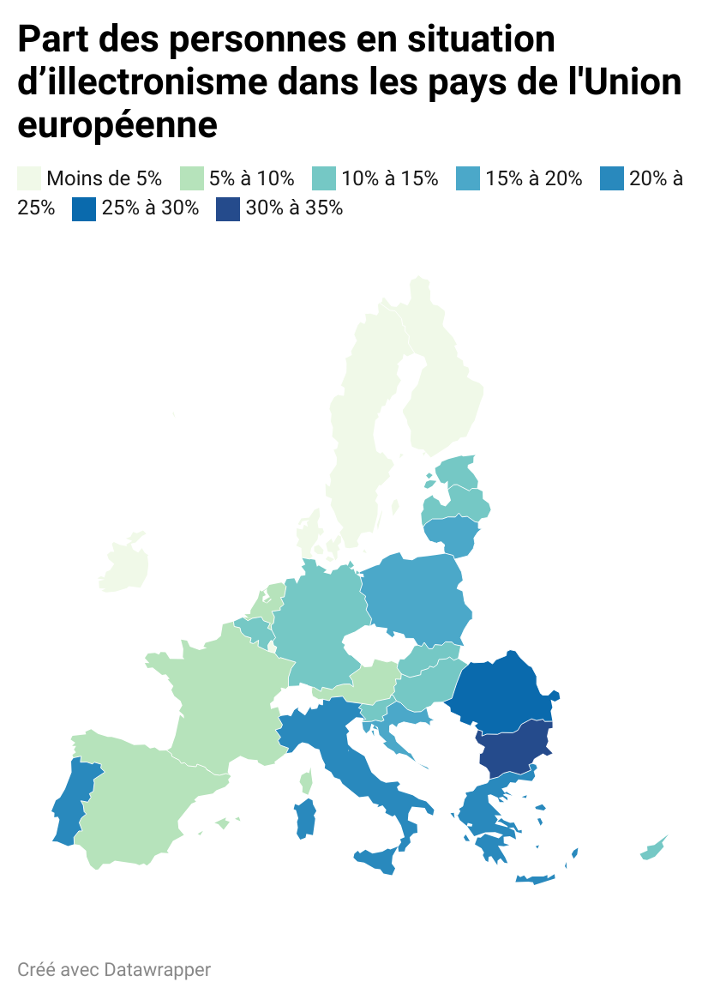

<!DOCTYPE html>
<html lang="en">
  <head>
    <meta charset="utf-8" />
    <meta name="viewport" content="width=device-width, initial-scale=1.0, maximum-scale=1.0, user-scalable=no" />

    <title></title>
    <link rel="stylesheet" href="dist/reveal.css" />
    <link rel="stylesheet" href="css/sunblind.css" id="theme" />
    <link rel="stylesheet" href="plugin/highlight/zenburn.css" />
	<link rel="stylesheet" href="css/layout.css" />
	<link rel="stylesheet" href="plugin/customcontrols/style.css">

	<link rel="stylesheet" href="plugin/reveal-pointer/pointer.css" />


    <script defer src="dist/fontawesome/all.min.js"></script>

	<script type="text/javascript">
		var forgetPop = true;
		function onPopState(event) {
			if(forgetPop){
				forgetPop = false;
			} else {
				parent.postMessage(event.target.location.href, "app://obsidian.md");
			}
        }
		window.onpopstate = onPopState;
		window.onmessage = event => {
			if(event.data == "reload"){
				window.document.location.reload();
			}
			forgetPop = true;
		}

		function fitElements(){
			const itemsToFit = document.getElementsByClassName('fitText');
			for (const item in itemsToFit) {
				if (Object.hasOwnProperty.call(itemsToFit, item)) {
					var element = itemsToFit[item];
					fitElement(element,1, 1000);
					element.classList.remove('fitText');
				}
			}
		}

		function fitElement(element, start, end){

			let size = (end + start) / 2;
			element.style.fontSize = `${size}px`;

			if(Math.abs(start - end) < 1){
				while(element.scrollHeight > element.offsetHeight){
					size--;
					element.style.fontSize = `${size}px`;
				}
				return;
			}

			if(element.scrollHeight > element.offsetHeight){
				fitElement(element, start, size);
			} else {
				fitElement(element, size, end);
			}		
		}


		document.onreadystatechange = () => {
			fitElements();
			if (document.readyState === 'complete') {
				if (window.location.href.indexOf("?export") != -1){
					parent.postMessage(event.target.location.href, "app://obsidian.md");
				}
				if (window.location.href.indexOf("print-pdf") != -1){
					let stateCheck = setInterval(() => {
						clearInterval(stateCheck);
						window.print();
					}, 250);
				}
			}
	};


        </script>
  </head>
  <body>
    <div class="reveal">
      <div class="slides"><section  data-markdown><script type="text/template"><!-- .slide: class="drop" -->
<div class="" style="position: absolute; left: 0px; top: 0px; height: 700px; width: 960px; min-height: 700px; display: flex; flex-direction: column; align-items: center; justify-content: center" absolute="true">

# Introduction

</div></script></section><section  data-markdown><script type="text/template"><!-- .slide: class="drop" -->
<div class="" style="position: absolute; left: 0px; top: 0px; height: 700px; width: 960px; min-height: 700px; display: flex; flex-direction: column; align-items: center; justify-content: center" absolute="true">

# Introduction à la culture numérique

*Comprendre le monde numérique qui nous entoure.*


<small>Apple II</small>
</div></script></section><section  data-markdown><script type="text/template"><!-- .slide: class="drop" -->
<div class="" style="position: absolute; left: 0px; top: 0px; height: 700px; width: 960px; min-height: 700px; display: flex; flex-direction: column; align-items: center; justify-content: center" absolute="true">

## Le numérique au Sénat

Le 18 juin 2025, audition de Luc Julia au Sénat pour parler de l'IA.
</div></script></section><section  data-markdown><script type="text/template"><!-- .slide: class="drop" -->
<div class="" style="position: absolute; left: 0px; top: 0px; height: 700px; width: 960px; min-height: 700px; display: flex; flex-direction: column; align-items: center; justify-content: center" absolute="true">

## Qu'est-ce que la culture numérique ?

**Définition** : Connaissances, pratiques et enjeux liés au numérique.

> « Ensemble des techniques matérielles et intellectuelles, des pratiques, des modes de pensée et des valeurs qui se développent sur Internet. » 
> 
> («Cyberculture », [*Encyclopedia Universalis*](https://www.universalis.fr/dictionnaire/cyberculture/))
</div></script></section><section  data-markdown><script type="text/template"><!-- .slide: class="drop" -->
<div class="" style="position: absolute; left: 0px; top: 0px; height: 700px; width: 960px; min-height: 700px; display: flex; flex-direction: column; align-items: center; justify-content: center" absolute="true">

### Les dimensions de la culture numérique

- technique ;
- économique ;
- pratique ;
- sociale ;
- éducationnelle ;
- communicationnelle ;
- critique.
</div></script></section><section  data-markdown><script type="text/template"><!-- .slide: class="drop" -->
<div class="" style="position: absolute; left: 0px; top: 0px; height: 700px; width: 960px; min-height: 700px; display: flex; flex-direction: column; align-items: center; justify-content: center" absolute="true">

### Compétences numériques

- Un engagement de l'État 
- Une obligation légale (art. L. 312-9 du Code de l'éducation) 
- Une nécessité pour comprendre les enjeux d'aujourd'hui


</div></script></section><section  data-markdown><script type="text/template"><!-- .slide: class="drop" -->
<div class="" style="position: absolute; left: 0px; top: 0px; height: 700px; width: 960px; min-height: 700px; display: flex; flex-direction: column; align-items: center; justify-content: center" absolute="true">

### Plan

1. Petite histoire du numérique
1. &shy;<!-- .element: class="fragment" data-fragment-index="1" -->Concepts techniques fondamentaux
1. &shy;<!-- .element: class="fragment" data-fragment-index="2" -->Enjeux éthiques, sociaux, politiques
1. &shy;<!-- .element: class="fragment" data-fragment-index="3" -->Etre acteur / actrice du numérique


</div></script></section><section  data-markdown><script type="text/template"><!-- .slide: class="drop" -->
<div class="" style="position: absolute; left: 0px; top: 0px; height: 700px; width: 960px; min-height: 700px; display: flex; flex-direction: column; align-items: center; justify-content: center" absolute="true">

## 1.1 Les origines : des machines et des idées
</div></script></section><section  data-markdown><script type="text/template"><!-- .slide: class="drop" -->
<div class="" style="position: absolute; left: 0px; top: 0px; height: 700px; width: 960px; min-height: 700px; display: flex; flex-direction: column; align-items: center; justify-content: center" absolute="true">

### La Pascaline (1642, Blaise Pascal)

La Pascaline, inventée en 1642 par Blaise Pascal, est la première machine à calculer mécanique. Elle permet d’additionner et de soustraire des nombres grâce à un système d’engrenages et de roues dentées.  
<small>Elle marque une étape fondamentale dans l’histoire de l’informatique, car elle montre qu’il est possible de déléguer certaines tâches intellectuelles à des machines.</small>


<small>Pascaline, Musée des Arts et Métiers</small>
</div></script></section><section  data-markdown><script type="text/template"><!-- .slide: class="drop" -->
<div class="" style="position: absolute; left: 0px; top: 0px; height: 700px; width: 960px; min-height: 700px; display: flex; flex-direction: column; align-items: center; justify-content: center" absolute="true">

### Charles Babbage et la machine analytique

Dans les années 1830, Charles Babbage imagine une machine analytique programmable utilisant des cartes perforées.  
<small>Il ne la réalisera jamais de son vivant, mais son fils en construira une unité centrale. Ce principe inspirera les premiers ordinateurs.</small>


<small>Reconstitution de la machine analytique</small>

[Voir la machine de Babbage (vidéo)](https://www.youtube.com/watch?v=XSkGY6LchJs)
</div></script></section><section  data-markdown><script type="text/template"><!-- .slide: class="drop" -->
<div class="" style="position: absolute; left: 0px; top: 0px; height: 700px; width: 960px; min-height: 700px; display: flex; flex-direction: column; align-items: center; justify-content: center" absolute="true">

### Le concept d’algorithme : d’Al-Khwarizmi à Alan Turing

Le mot « algorithme » vient du mathématicien perse Al-Khwarizmi (IXe s.), dont les travaux sur la résolution systématique des équations ont posé les bases de la logique mathématique.  
En 1842, Ada Lovelace écrit le premier algorithme de programmation de l'histoire, pour la machine analytique de Babbage.


<small>Diagramme du premier algorithme, Ada Lovelace</small>
</div></script></section><section  data-markdown><script type="text/template"><!-- .slide: class="drop" -->
<div class="" style="position: absolute; left: 0px; top: 0px; height: 700px; width: 960px; min-height: 700px; display: flex; flex-direction: column; align-items: center; justify-content: center" absolute="true">

### La machine de Turing (1936)

Alan Turing publie en 1936 la description d’une « machine universelle » capable de manipuler des symboles sur une bande selon des règles précises.  
<small>Ce modèle abstrait pose les bases de l’informatique moderne et de la notion de programme.</small>


<small>Machine de Turing en Lego (ENS)</small>

[Vidéo explicative](https://www.youtube.com/watch?v=FU_YFpfDqqA)
</div></script></section><section  data-markdown><script type="text/template"><!-- .slide: class="drop" -->
<div class="" style="position: absolute; left: 0px; top: 0px; height: 700px; width: 960px; min-height: 700px; display: flex; flex-direction: column; align-items: center; justify-content: center" absolute="true">

### Seconde Guerre mondiale : cryptanalyse et premiers ordinateurs

Alan Turing, à Bletchley Park, contribue à casser le code de la machine allemande Enigma avec la “Bombe”.  
Le Colossus, premier ordinateur électronique programmable, est développé pour déchiffrer le code Lorenz.  
En 1945, l’ENIAC devient le premier ordinateur électronique généraliste.


<small>L’ENIAC en fonctionnement</small>
</div></script></section><section  data-markdown><script type="text/template"><!-- .slide: class="drop" -->
<div class="" style="position: absolute; left: 0px; top: 0px; height: 700px; width: 960px; min-height: 700px; display: flex; flex-direction: column; align-items: center; justify-content: center" absolute="true">

## 1.2 L’informatique moderne (années 1950-1980)
</div></script></section><section  data-markdown><script type="text/template"><!-- .slide: class="drop" -->
<div class="" style="position: absolute; left: 0px; top: 0px; height: 700px; width: 960px; min-height: 700px; display: flex; flex-direction: column; align-items: center; justify-content: center" absolute="true">

### Ordinateurs centraux (mainframes) : IBM

À partir des années 1950, les mainframes deviennent les piliers de l’informatique d’entreprise. IBM domine avec des machines comme l’IBM System/360, capables de traiter d’énormes volumes de données.
</div></script></section><section  data-markdown><script type="text/template"><!-- .slide: class="drop" -->
<div class="" style="position: absolute; left: 0px; top: 0px; height: 700px; width: 960px; min-height: 700px; display: flex; flex-direction: column; align-items: center; justify-content: center" absolute="true">

### Micro-processeur

Au début des années 1970, l’invention du micro-processeur (ex : Intel 4004) permet de miniaturiser les ordinateurs et de démocratiser l’accès à la puissance de calcul.
</div></script></section><section  data-markdown><script type="text/template"><!-- .slide: class="drop" -->
<div class="" style="position: absolute; left: 0px; top: 0px; height: 700px; width: 960px; min-height: 700px; display: flex; flex-direction: column; align-items: center; justify-content: center" absolute="true">

### Micro-informatique : Apple II, IBM PC

La micro-informatique naît à la fin des années 1970 avec les premiers ordinateurs personnels (PC).


|   |   |
|-|-|
|<small>Apple II</small>|<small>IBM PC</small>|
</div></script></section><section  data-markdown><script type="text/template"><!-- .slide: class="drop" -->
<div class="" style="position: absolute; left: 0px; top: 0px; height: 700px; width: 960px; min-height: 700px; display: flex; flex-direction: column; align-items: center; justify-content: center" absolute="true">

### Premiers langages de programmation

Fortran (1957) pour le calcul scientifique, Cobol (1959) pour la gestion, BASIC (1964) pour l’apprentissage.  
<small>Certains systèmes (finance, banques) tournent encore aujourd’hui en Cobol !</small>
</div></script></section><section  data-markdown><script type="text/template"><!-- .slide: class="drop" -->
<div class="" style="position: absolute; left: 0px; top: 0px; height: 700px; width: 960px; min-height: 700px; display: flex; flex-direction: column; align-items: center; justify-content: center" absolute="true">

#### Exemple : Steve Jobs, Steve Wozniak et la création d’Apple dans un garage

<small>Une légende qui illustre l’esprit pionnier de la micro-informatique, même si l’histoire réelle est plus complexe.</small>
</div></script></section><section  data-markdown><script type="text/template"><!-- .slide: class="drop" -->
<div class="" style="position: absolute; left: 0px; top: 0px; height: 700px; width: 960px; min-height: 700px; display: flex; flex-direction: column; align-items: center; justify-content: center" absolute="true">

## 1.3 L’avènement du réseau (années 1990-2000)
</div></script></section><section  data-markdown><script type="text/template"><!-- .slide: class="drop" -->
<div class="" style="position: absolute; left: 0px; top: 0px; height: 700px; width: 960px; min-height: 700px; display: flex; flex-direction: column; align-items: center; justify-content: center" absolute="true">

### ARPANET (1969) : ancêtre d’Internet

ARPANET est créé par la DARPA pour relier des universités américaines. Il introduit la commutation de paquets et pose les bases d’Internet.
</div></script></section><section  data-markdown><script type="text/template"><!-- .slide: class="drop" -->
<div class="" style="position: absolute; left: 0px; top: 0px; height: 700px; width: 960px; min-height: 700px; display: flex; flex-direction: column; align-items: center; justify-content: center" absolute="true">

### Projet Cyclades (France)

Dans les années 1970, le projet Cyclades, dirigé par Louis Pouzin, introduit le concept de datagramme et inspire le protocole TCP/IP.
</div></script></section><section  data-markdown><script type="text/template"><!-- .slide: class="drop" -->
<div class="" style="position: absolute; left: 0px; top: 0px; height: 700px; width: 960px; min-height: 700px; display: flex; flex-direction: column; align-items: center; justify-content: center" absolute="true">

### Internet : interconnexion mondiale, TCP/IP (1983)

En 1983, TCP/IP devient le protocole standard, permettant l’interconnexion mondiale de réseaux hétérogènes.  
<small>Internet devient un espace numérique global, ouvert au public.</small>
</div></script></section><section  data-markdown><script type="text/template"><!-- .slide: class="drop" -->
<div class="" style="position: absolute; left: 0px; top: 0px; height: 700px; width: 960px; min-height: 700px; display: flex; flex-direction: column; align-items: center; justify-content: center" absolute="true">

### Naissance du Web (Tim Berners-Lee, 1990)

Tim Berners-Lee invente le Web au CERN : HTML, HTTP, URL.  
<small>Le Web permet à chacun de publier et consulter de l’information facilement.</small>
</div></script></section><section  data-markdown><script type="text/template"><!-- .slide: class="drop" -->
<div class="" style="position: absolute; left: 0px; top: 0px; height: 700px; width: 960px; min-height: 700px; display: flex; flex-direction: column; align-items: center; justify-content: center" absolute="true">

### Explosion des usages : e-mail, moteurs de recherche, forums, blogs

L’e-mail révolutionne la communication, Google (1998) facilite l’accès à l’information, forums et blogs démocratisent la publication de contenu.
</div></script></section><section  data-markdown><script type="text/template"><!-- .slide: class="drop" -->
<div class="" style="position: absolute; left: 0px; top: 0px; height: 700px; width: 960px; min-height: 700px; display: flex; flex-direction: column; align-items: center; justify-content: center" absolute="true">

#### Exemple : Le Web et la publication de contenu

<small>Le Web permet à n’importe qui de publier un site ou un blog, touchant un public mondial sans barrière technique majeure.</small>
</div></script></section><section  data-markdown><script type="text/template"><!-- .slide: class="drop" -->
<div class="" style="position: absolute; left: 0px; top: 0px; height: 700px; width: 960px; min-height: 700px; display: flex; flex-direction: column; align-items: center; justify-content: center" absolute="true">

## 1.4 L’ère des plateformes et du numérique ubiquitaire (2000-aujourd’hui)
</div></script></section><section  data-markdown><script type="text/template"><!-- .slide: class="drop" -->
<div class="" style="position: absolute; left: 0px; top: 0px; height: 700px; width: 960px; min-height: 700px; display: flex; flex-direction: column; align-items: center; justify-content: center" absolute="true">

### Web 2.0 : interaction et réseaux sociaux

Le Web devient interactif : Facebook (2004), Twitter (2006), Airbnb, Uber…  
<small>Les utilisateurs créent et partagent du contenu, l’économie collaborative se développe.</small>
</div></script></section><section  data-markdown><script type="text/template"><!-- .slide: class="drop" -->
<div class="" style="position: absolute; left: 0px; top: 0px; height: 700px; width: 960px; min-height: 700px; display: flex; flex-direction: column; align-items: center; justify-content: center" absolute="true">

### Mobile : smartphone, applications, connectivité permanente

L’iPhone (2007) et la généralisation des smartphones rendent l’accès à Internet permanent et mobile.  

<iframe width="560" height="315" src="https://www.youtube.com/embed/z9w6tO4d90U?si=A3ZBBrIzfOTNuEx6" title="YouTube video player" frameborder="0"  allowfullscreen></iframe>

<small>Les applications mobiles deviennent centrales dans la vie quotidienne.</small>
</div></script></section><section  data-markdown><script type="text/template"><!-- .slide: class="drop" -->
<div class="" style="position: absolute; left: 0px; top: 0px; height: 700px; width: 960px; min-height: 700px; display: flex; flex-direction: column; align-items: center; justify-content: center" absolute="true">

### Cloud, IoT : données partout, objets connectés

Le cloud computing permet de stocker et traiter des données à distance.  
L’Internet des objets (IoT) connecte montres, thermostats, assistants vocaux…
</div></script></section><section  data-markdown><script type="text/template"><!-- .slide: class="drop" -->
<div class="" style="position: absolute; left: 0px; top: 0px; height: 700px; width: 960px; min-height: 700px; display: flex; flex-direction: column; align-items: center; justify-content: center" absolute="true">

### Big Data, IA : explosion des données, assistants intelligents

Le Big Data permet d’analyser d’immenses volumes de données.  
L’IA (Siri, ChatGPT) personnalise les services et automatise des tâches complexes.
</div></script></section><section  data-markdown><script type="text/template"><!-- .slide: class="drop" -->
<div class="" style="position: absolute; left: 0px; top: 0px; height: 700px; width: 960px; min-height: 700px; display: flex; flex-direction: column; align-items: center; justify-content: center" absolute="true">

#### Enjeux contemporains

Qui contrôle ces plateformes et ces données ?  
<small>Vie privée, sécurité, souveraineté numérique, démocratie : des débats essentiels aujourd’hui.</small>
</div></script></section><section  data-markdown><script type="text/template"><!-- .slide: class="drop" -->
<div class="" style="position: absolute; left: 0px; top: 0px; height: 700px; width: 960px; min-height: 700px; display: flex; flex-direction: column; align-items: center; justify-content: center" absolute="true">

# 2 Concepts fondamentaux à maîtriser
</div></script></section><section  data-markdown><script type="text/template"><!-- .slide: class="drop" -->
<div class="" style="position: absolute; left: 0px; top: 0px; height: 700px; width: 960px; min-height: 700px; display: flex; flex-direction: column; align-items: center; justify-content: center" absolute="true">

## 2.1 Informatique : bases techniques

- Un ordinateur = matériel (CPU, RAM, disque) + logiciel (système d’exploitation, applications).  
- &shy;<!-- .element: class="fragment" data-fragment-index="1" -->Les langages de programmation vont du binaire aux langages évolués (Python, Java).  
- &shy;<!-- .element: class="fragment" data-fragment-index="2" -->Un algorithme est une suite d’instructions logiques pour résoudre un problème.  
- &shy;<!-- .element: class="fragment" data-fragment-index="3" -->Une donnée numérique est une représentation binaire d'une information.

```asm
section .data
    msg db "Hello, world!", 0xA   ; La chaîne de caractères à afficher, suivie d'un saut de ligne

section .text
    global _start

_start:
    ; write(1, msg, 14)
    mov eax, 4          ; syscall numéro 4 : sys_write
    mov ebx, 1          ; descripteur de fichier 1 : stdout
    mov ecx, msg        ; adresse du message
    mov edx, 14         ; longueur du message
    int 0x80            ; appel système

    ; exit(0)
    mov eax, 1          ; syscall numéro 1 : sys_exit
    xor ebx, ebx        ; code de retour 0
    int 0x80            ; appel système

```
<small>Un exemple de programme en assembleur</small>
</div></script></section><section  data-markdown><script type="text/template"><!-- .slide: class="drop" -->
<div class="" style="position: absolute; left: 0px; top: 0px; height: 700px; width: 960px; min-height: 700px; display: flex; flex-direction: column; align-items: center; justify-content: center" absolute="true">

## 2.2 Internet vs Web

- **Internet** = infrastructure physique (câbles, satellites, routeurs) + protocoles (TCP/IP, DNS).  
- &shy;<!-- .element: class="fragment" data-fragment-index="1" -->Le **Web** = service d’hypertexte (HTML, navigateurs, liens).  
- &shy;<!-- .element: class="fragment" data-fragment-index="2" -->Autres services : e-mail (SMTP), FTP (transfert de fichiers), peer-to-peer.
</div></script></section><section  data-markdown><script type="text/template"><!-- .slide: class="drop" -->
<div class="" style="position: absolute; left: 0px; top: 0px; height: 700px; width: 960px; min-height: 700px; display: flex; flex-direction: column; align-items: center; justify-content: center" absolute="true">

## 2.3 Données et code

- Une donnée est une information numérisée, encodée dans un format (texte, image, vidéo).  

- Interopérabilité = capacité des systèmes à échanger des données (formats ouverts vs propriétaires).  

- Le logiciel est l’infrastructure invisible mais essentielle (systèmes d’exploitation, applications, API).
</div></script></section><section  data-markdown><script type="text/template"><!-- .slide: class="drop" -->
<div class="" style="position: absolute; left: 0px; top: 0px; height: 700px; width: 960px; min-height: 700px; display: flex; flex-direction: column; align-items: center; justify-content: center" absolute="true">

# 3. Enjeux contemporains du numérique
</div></script></section><section  data-markdown><script type="text/template"><!-- .slide: class="drop" -->
<div class="" style="position: absolute; left: 0px; top: 0px; height: 700px; width: 960px; min-height: 700px; display: flex; flex-direction: column; align-items: center; justify-content: center" absolute="true">


<small>Baromètre du numérique, 2025 - part de la population disposant d'un équipement numérique</small>
</div></script></section><section  data-markdown><script type="text/template"><!-- .slide: class="drop" -->
<div class="" style="position: absolute; left: 0px; top: 0px; height: 700px; width: 960px; min-height: 700px; display: flex; flex-direction: column; align-items: center; justify-content: center" absolute="true">

## 3.1. Éthique, vie privée et surveillance

- Traçabilité : cookies, tracking publicitaire, profilage.  
- Données personnelles : ce que les plateformes savent de nous.  
- RGPD : droits des citoyens européens sur leurs données.  
- Surveillance de masse : États (caméras, écoutes), entreprises (GAFAM).

> **Exemple** : Le scandale Cambridge Analytica et la manipulation des élections via Facebook.
</div></script></section><section  data-markdown><script type="text/template"><!-- .slide: class="drop" -->
<div class="" style="position: absolute; left: 0px; top: 0px; height: 700px; width: 960px; min-height: 700px; display: flex; flex-direction: column; align-items: center; justify-content: center" absolute="true">

## 3.2. Économie et pouvoir

Modèles économiques : gratuité apparente financée par la publicité et la collecte de données.  
Capitalisme de surveillance (Shoshana Zuboff) : exploitation des comportements humains à des fins commerciales.  
Souveraineté numérique : qui possède les infrastructures, les données, les IA ? Enjeux pour l’Europe face aux GAFAM et BATX chinois.

> **Exemple** : La dépendance européenne aux clouds américains (AWS, Azure, Google Cloud).
</div></script></section><section  data-markdown><script type="text/template"><!-- .slide: class="drop" -->
<div class="" style="position: absolute; left: 0px; top: 0px; height: 700px; width: 960px; min-height: 700px; display: flex; flex-direction: column; align-items: center; justify-content: center" absolute="true">

## 3.3. Inclusion, fracture et éducation numérique
</div></script></section><section  data-markdown><script type="text/template"><!-- .slide: class="drop" -->
<div class="" style="position: absolute; left: 0px; top: 0px; height: 700px; width: 960px; min-height: 700px; display: flex; flex-direction: column; align-items: center; justify-content: center" absolute="true">


</div></script></section><section  data-markdown><script type="text/template"><!-- .slide: class="drop" -->
<div class="" style="position: absolute; left: 0px; top: 0px; height: 700px; width: 960px; min-height: 700px; display: flex; flex-direction: column; align-items: center; justify-content: center" absolute="true">

- Fracture numérique : inégalités d’accès (zone rurale/urbaine, générationnelle, sociale).  
- Éducation aux médias et à l’information (EMI) : comprendre et vérifier l’information, lutter contre les fake news.  
- Citoyenneté numérique : droits et devoirs dans un monde connecté.
</div></script></section><section  data-markdown><script type="text/template"><!-- .slide: class="drop" -->
<div class="" style="position: absolute; left: 0px; top: 0px; height: 700px; width: 960px; min-height: 700px; display: flex; flex-direction: column; align-items: center; justify-content: center" absolute="true">

# 4. Être acteur et non spectateur

- Pratiques quotidiennes : choisir ses outils, ses sources, ses partages.  
- Esprit critique : comprendre le fonctionnement des algorithmes, plateformes, IA.  
- Hygiène numérique : sécuriser ses mots de passe, vérifier l’information, protéger sa vie privée.

> **Exemple** : Utiliser un gestionnaire de mots de passe, activer la double authentification.
</div></script></section><section  data-markdown><script type="text/template"><!-- .slide: class="drop" -->
<div class="" style="position: absolute; left: 0px; top: 0px; height: 700px; width: 960px; min-height: 700px; display: flex; flex-direction: column; align-items: center; justify-content: center" absolute="true">

# Conclusion

- Les grandes étapes historiques du numérique
- Les concepts techniques fondamentaux (ordinateur, Internet, Web, données, algorithmes)
- Les enjeux éthiques, économiques, sociaux et politiques
 - **Littératie numérique** : une compétence essentielle aujourd’hui
</div></script></section><section  data-markdown><script type="text/template"><!-- .slide: class="drop" -->
<div class="" style="position: absolute; left: 0px; top: 0px; height: 700px; width: 960px; min-height: 700px; display: flex; flex-direction: column; align-items: center; justify-content: center" absolute="true">

# Ressources
</div></script></section><section  data-markdown><script type="text/template"><!-- .slide: class="drop" -->
<div class="" style="position: absolute; left: 0px; top: 0px; height: 700px; width: 960px; min-height: 700px; display: flex; flex-direction: column; align-items: center; justify-content: center" absolute="true">

## Livres

Quelques livres pour aller plus loin

- Dominique Cardon, « Culture numérique »
- Anne Bellon, « L'État et la toile »
- Shoshanna Zuboff, « L'âge du capitalisme de surveillance »
- Guide d'auto-défense numérique
- etc.
</div></script></section><section  data-markdown><script type="text/template"><!-- .slide: class="drop" -->
<div class="" style="position: absolute; left: 0px; top: 0px; height: 700px; width: 960px; min-height: 700px; display: flex; flex-direction: column; align-items: center; justify-content: center" absolute="true">

## En ligne

|     |     |
| --- | --- |
| Quelques sites  |  [CNIL](https://www.cnil.fr/fr), [IETF](https://www.ietf.org/), [MDN](https://developer.mozilla.org/fr/), [W3C](https://www.w3.org/) (et [W3Schools](https://www.w3schools.com/) pour la formation)   |
| Formations & éducation en ligne | [FUN](https://www.fun-mooc.fr/fr/) (France Université Numérique), [OpenClassrooms](https://openclassrooms.com/fr/), YouTube | 

- CNIL, Internet Society, Mozilla Foundation
- MOOC : “Comprendre le numérique” (FUN), “Internet et vous” (OpenClassrooms)
</div></script></section><section  data-markdown><script type="text/template"><!-- .slide: class="drop" -->
<div class="" style="position: absolute; left: 0px; top: 0px; height: 700px; width: 960px; min-height: 700px; display: flex; flex-direction: column; align-items: center; justify-content: center" absolute="true">

## Questions et débat

-  À quoi ressemblerait votre vie sans numérique ?
-  Pourquoi et peut-on vraiment protéger sa vie privée en ligne ?
-  Le numérique rapproche-t-il ou éloigne-t-il les gens ?
</div></script></section></div>
    </div>

    <script src="dist/reveal.js"></script>

    <script src="plugin/markdown/markdown.js"></script>
    <script src="plugin/highlight/highlight.js"></script>
    <script src="plugin/zoom/zoom.js"></script>
    <script src="plugin/notes/notes.js"></script>
    <script src="plugin/math/math.js"></script>
	<script src="plugin/mermaid/mermaid.js"></script>
	<script src="plugin/chart/chart.min.js"></script>
	<script src="plugin/chart/plugin.js"></script>
	<script src="plugin/menu/menu.js"></script>
	<script src="plugin/customcontrols/plugin.js"></script>
	<script src="plugin/reveal-pointer/pointer.js"></script>

    <script>
      function extend() {
        var target = {};
        for (var i = 0; i < arguments.length; i++) {
          var source = arguments[i];
          for (var key in source) {
            if (source.hasOwnProperty(key)) {
              target[key] = source[key];
            }
          }
        }
        return target;
      }

	  function isLight(color) {
		let hex = color.replace('#', '');

		// convert #fff => #ffffff
		if(hex.length == 3){
			hex = `${hex[0]}${hex[0]}${hex[1]}${hex[1]}${hex[2]}${hex[2]}`;
		}

		const c_r = parseInt(hex.substr(0, 2), 16);
		const c_g = parseInt(hex.substr(2, 2), 16);
		const c_b = parseInt(hex.substr(4, 2), 16);
		const brightness = ((c_r * 299) + (c_g * 587) + (c_b * 114)) / 1000;
		return brightness > 155;
	}

	var bgColor = getComputedStyle(document.documentElement).getPropertyValue('--r-background-color').trim();
	var isLight = isLight(bgColor);

	if(isLight){
		document.body.classList.add('has-light-background');
	} else {
		document.body.classList.add('has-dark-background');
	}

      // default options to init reveal.js
      var defaultOptions = {
        controls: true,
        progress: true,
        history: true,
        center: true,
        transition: 'default', // none/fade/slide/convex/concave/zoom
        plugins: [
          RevealMarkdown,
          RevealHighlight,
          RevealZoom,
          RevealNotes,
          RevealMath.MathJax3,
		  RevealMermaid,
		  RevealChart,
		  RevealCustomControls,
		  RevealMenu,
	      RevealPointer,
        ],


    	allottedTime: 120 * 1000,

		mathjax3: {
			mathjax: 'plugin/math/mathjax/tex-mml-chtml.js',
		},
		markdown: {
		  gfm: true,
		  mangle: true,
		  pedantic: false,
		  smartLists: false,
		  smartypants: false,
		},

		mermaid: {
			theme: isLight ? 'default' : 'dark',
		},

		customcontrols: {
			controls: [
				{id: 'toggle-overview',
				title: 'Toggle overview (O)',
				icon: '<i class="fa fa-th"></i>',
				action: 'Reveal.toggleOverview();'
				},
			]
		},
		menu: {
			loadIcons: false
		}
      };

      // options from URL query string
      var queryOptions = Reveal().getQueryHash() || {};

      var options = extend(defaultOptions, {"width":960,"height":700,"margin":0.04,"controls":true,"progress":true,"slideNumber":true,"transition":"slide","transitionSpeed":"slow"}, queryOptions);
    </script>

    <script>
      Reveal.initialize(options);
    </script>
  </body>

  <!-- created with Advanced Slides -->
</html>
